건축설비기사 (2010-09-05 기출문제)
1과목: 건축일반
1. 단독주택의 실(室)의 계획에 대한 내용으로 옳지 않은 것은?
- 실의 사용상 특징에 의하여 유사한 기능의 실은 하나의 집단(group)으로 배치하는 분배를 한다.
- 거실은 주거의 중심에 두고 응접실과 객실은 현관에서 최대한 멀리 배치한다.
- 침실, 서재, 노인실은 조용한 곳에 두며 작업실은 부출입구 가까이에 집중시킨다.
- 부엌, 욕실, 화장실, 세면실, 세탁실 등 일련의 작업실들은 작업의 연결관계를 고려하여 배치한다.
(정답률: 88%)

2. 주택평면을 계획할 경우에 계획방법이 옳지 않은 것은?
- 시간적 요소가 같은 것끼리 서로 격리시킨다.
- 유사한 요소의 것은 공용하도록 한다.
- 구성원 본위로 유사한 것은 서로 접근시킨다.
- 상호간 요소가 서로 상반된 것은 서로 격리시킨다.
(정답률: 73%)
3. 학교의 강당계획에 관한 설명 중 옳지 않은 것은?
- 강당의 면적 산출에서 고정 의자식의 경우가 이동 의자식의 경우보다 그 면적이 크다.
- 강당은 체육관과 겸하도록 계획하는 것이 좋다.
- 강당의 위치는 외부와의 연락이 좋은 곳에 배치한다.
- 강당 연단 주위에는 반사재를 그리고 먼 곳에는 흡음재를 사용하여 음향효과가 좋게 한다.
(정답률: 63%)
4. 다음 중 구조에 따른 철근콘크리트 계단의 종류에 속하지 않는 것은?
- 겔버보식
- 계단보식
- 슬래브식
- 캔틸레버식
(정답률: 47%)
5. 그림과 같은 환기 방식이 적합하지 않은 실은?
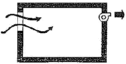
- 화장살
- 수술실
- 주방
- 욕실
(정답률: 89%)
6. 금속판 지분에 있어서 아주 가벼워 가공하기 쉽고 수중이나 공기 중에서 내구력도 크지만 산과 알칼리에 대하여 약하여 매연(媒緣)과 조풍(潮風)에 썪기 쉽고 온도에 대하여 신축이 큰 결점이 있는 금속판은?
- 동판
- 아연판
- 골함석
- 얇은 강판
(정답률: 61%)
7. 상점계획에서 진열장(show case)의 배치 시 고려사항으로 옳지 않은 것은?
- 들어오는 손님과 종업원의 시선이 직접 마주치도록 할 것
- 감시하기 쉽고 또한 손님에게는 감시한다는 인상을 주지 않게 할 것
- 손님과 종업원의 동선을 원활하게 하여 다수의 손님을 수용하고 소수의 종업원으로 관리하기에 편리하도록 할 것
- 손님쪽에서 상품이 효과적으로 보이도록 할 것
(정답률: 75%)
8. 일사 계획에 대한 설명 중 옳지 않은 것은?
- 일사량을 줄이려면 동서축이 길고 급경사 박공지붕을 가진 건물형이 유리하다.
- 건물 주변에 활엽수 보다는 침엽수를 심는 것이 유리하다.
- 겨울철의 난방 부하를 줄이기 위해 직달일사를 최대한 도입해야 한다.
- 난방 기간 중에 최대의 일사를 받기 위해서는 남향이 유리하다.
(정답률: 76%)
9. 다음 중 연면적 당 숙박 면적비가 가장 큰 호텔은?
- 커머셜 호텔
- 리조트 호텔
- 레지덴셜 호텔
- 클럽하우스
(정답률: 83%)
10. 다음 중 병원 수술실의 계획요건에 대한 설명으로 옳지 않은 것은?
- 수술실 실내의 온도는 26.6℃이상, 습도는 55% 이상으로 하는 것이 좋다.
- 수술실의 공기조화 설비는 공기재순환이 원활하게 될 수 있도록 한다.
- 수술실 출입문 손잡이는 자동문이나 팔꿈치 조작식으로 한다.
- 마취약은 폭발성이 있는 경우가 있으므로 모든 전기기구는 스파크 방지 장치가 있는 것을 사용해야 한다.
(정답률: 83%)
11. 상점의 판매형식 중 대면판매의 특징에 대한 설명으로 가장 알맞은 것은?
- 상품이 손에 잡혀서 충동적 구매와 선택이 용이하다.
- 진열면적이 커지고 상품에 친근감이 간다.
- 일반적으로 양복, 침구, 전기기구, 서적, 운동용구점 등에서 쓰인다.
- 판매원이 정위치를 정하기가 용이하다.
(정답률: 50%)
12. 철골구조 접합부의 접합방법에 대한 설명으로 옳지 않은 것은?
- 반강접합 접합부에 작용하는 부재력은 축방향력, 전단력이다.
- 핀접합 접합부에 작용하는 부재력은 축방향력과 전단력이다.
- 일반적으로 가장 강하게 설계하는 접합방법은 강접합 방법이다.
- 강접합 접합부에 작용하는 부재력은 축방향력, 전단력, 모멘트이다.
(정답률: 58%)
13. 오피스 랜드스케이프(office landscape)계획의 장점이 아닌 것은?
- 시설유지비가 적게 소요된다.
- 변화하는 작업의 패턴에 따라 감독이 용이하다.
- 적용시 좁은 공간일수록 효율이 뛰어나다.
- 커뮤니케이션의 융통성이 있다.
(정답률: 69%)
14. 목구조에서 심벽에 대한 설명 중 옳은 것은?
- 기둥과 기둥사이를 모르타르로 바른 벽
- 바름벽을 기둥의 외측에 만들어 기둥이 보이지 않게 한 벽
- 기둥복판에 벽을 만들어 기둥이 보이도록 한 벽
- 기둥과 기둥사이를 흙으로 바른 벽
(정답률: 78%)
15. SRC(철골철근콘크리트)조에 대한 설명으로 옳지 않은 것은?
- 철근콘크리트구조보다 내진성이 우수하다.
- 철골구조에 비해 거주성이 좋으며, 내화적이다.
- 철근콘크리트구조보다 건물의 중량을 크게 감소시킬 수 있다.
- 철골부분은 H형강이 많이 쓰이고 H형강을 용접한 허니콤 및 십자형으로 된 H형강을 많이 사용한다.
(정답률: 77%)
16. 사무소 건축에서 코어(core)에 관한 설명 중 옳지 않은 것은?
- 건물 내의 설비시설을 배치하여 사무소 건물 내 신경계통의 실의 집중시켜 두는 곳으로서의 역할을 한다.
- 내력벽 구조체로 축조하여 지진이나 풍압 등에 대한 주내력 구조체가 되도록 계획한다.
- 엘리베이터 홀이 출입구문에 바싹 접근해 있지 않도록 한다.
- 엘리베이터는 가급적 건물의 모서리 부분에 집중되도록 계획한다.
(정답률: 87%)
17. 다음 중 실의 크기 결정 요소가 아닌 것은?
- 실내 조명의 방식과 위치
- 실내 가구의 종류와 모양
- 실내 가구의 배치상태
- 실내 통행을 위한 여유공간
(정답률: 70%)
18. 다음 중 결로 현상의 원인과 가장 거리가 먼 것은?
- 환기 회수의 증가
- 구조재의 열적 특성
- 실내습기의 과다 발생
- 실내와의 과다한 온도차
(정답률: 79%)
19. 리조트호텔의 대지조건으로 가장 거리가 먼 것은?
- 연회등을 위해 외래객에게 개방되고 교통이 편리한 도시 중심지에 위치해야 한다.
- 주위의 경치가 좋아야 한다.
- 물이 맑고 수원이 풍부해야 한다.
- 수해나 풍해 등으로부터 위험이 없어야 한다.
(정답률: 85%)
20. 천장 공사시 주의할 사항에 대하여 언급한 내용 중 옳지 않은 것은?
- 천장 내부의 설비배관이나 덕트가 설치될 수 있는 공간이 가능한지 시공 전에 확인한다.
- 경량철골 천장틀 공사시 매입되는 형광등 박스는 별도의 보강이 없이 천장틀에 단단히 고정한다.
- 양면 흡음판의 배치를 위하여 천장나누기도를 작성한다.
- 천장 내부에 관리가 필요한 설비가 있으면 점검구를 설치해야 한다.
(정답률: 82%)
2과목: 위생설비
21. 다음과 같은 특징을 갖는 대변기 세정방식(세정수의 급수방식)은?
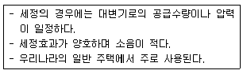
- 하이 탱크식
- 로 탱크식
- 플러시 밸브식
- 세락식
(정답률: 79%)
22. 급수설비의 수압시험시 수도직결계통의 시험압력은 배관의 최저부에서 최소 얼마 이상으로 하는가?
- 7.5 kg/cm2
- 10 kg/cm2
- 17.5 kg/cm2
- 20 kg/cm2
(정답률: 47%)
23. 관내유동에서 층류와 난류를 판단하는 기준이 되는 것은?
- 마하(Mach)수
- 레이놀즈(Reynolds)수
- 프란틀(Prandtl)수
- 그라솝(Grashof)수
(정답률: 68%)
24. 급수배관의 계획 및 시공에 관한 설명 중 옳지 않은 것은?
- 음료용 급수관과 다른 용도의 배관을 크로스 커넥션해서는 안된다.
- 주배관에는 적당한 위치에 플랜지 이음을 하여 보수점검을 용이하게 한다.
- 수평배관에는 오물이 정체하지 않도록 하며, 어쩔 수 없이 각종 오물이 정체하는 곳에는 공기빼기밸브를 설치한다.
- 높은 유수음이나 수격작용이 발생할 염려가 있는 급수계통에는 에어 챔버나 워터햄머 방지기 등의 완충장치를 설치한다.
(정답률: 77%)
25. 온도 10℃, 길이 200m인 동관에 탕이 흘러 60℃가 되었을 때, 동관의 팽창량은? (단, 동관의 선팽창계수는 0.17×10-4/℃ 이다.)
- 0.131 m
- 0.171 m
- 0.251 m
- 0.311 m
(정답률: 72%)
26. 급탕설비에서 팽창관을 설치하는 가장 주된 이유는?
- 급탕온도를 일정하게 유지하기 위하여
- 급탕배관의 온도변화에 따른 신축을 흡수하기 위하여
- 저탕조 내의 온도가 100℃를 넘지 않도록 하기 위하여
- 보일러, 저탕조 등 밀폐 가열장치내의 압력상승을 도피시키기 위하여
(정답률: 72%)
27. 펌프의 전양정이 41.6m, 양수량이 400L/min 일 때 전동기의 축동력은? (단, 펌프의 효율은 55%, 물의 밀도는 1,000kg/m3이다.)
- 3.94 kW
- 4.54 kW
- 4.94 kW
- 5.44 kW
(정답률: 67%)
28. 다음 중 기구의 최저필요압력이 가장 낮은 것은?
- 샤워
- 보통밸브
- 자동밸브
- 세정밸브(일반 대변기용)
(정답률: 69%)
29. 다음 중 위생설비 유니트(unit)화의 목적과 가장 거리가 먼 것은?
- 제품의 다양화
- 현장 공사비의 절감
- 공기의 단축
- 품질의 향상
(정답률: 80%)
30. 가스에 관한 설명 중 옳지 않은 것은?
- LP가스는 비중이 공기보다 크고 연소시 이른공기량이 많다.
- LN가스는 메탄올 주성분으로 하는 천연가스를 냉각하여 액화시킨 것이다.
- LN가스는 배관을 통해서 공급할 수 없으며 작은 용기에 담아서 사용해야 한다.
- LN가스는 공기보다 가벼워 누설이 된다 해도 공기중에 흡수되기 때문에 안전성이 높다.
(정답률: 75%)
31. 다음 중 물분무소화설비의 소화작용과 가장 관계가 먼 것은?
- 냉각효과
- 질식효과
- 희석효과
- 부촉매효과
(정답률: 68%)
32. 다음 그림에서 ①부분의 통기관의 명칭은?
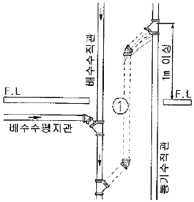
- 도피 통기관
- 신정 통기관
- 회로 통기관
- 결합 통기관
(정답률: 63%)
33. 스프링클러설비용 수조에 관한 설명으로 옳지 않은 것은?
- 수조의 외측에 수위계를 설치할 것
- 수조의 상단에는 청소용 배수밸브 또는 배수관을 설치 할 것
- 수조가 실내에 설치된 때에는 그 실내에 조명설비를 설치할 것
- 수조의 상단이 바닥보다 높은 때에는 수조의 외측에 고정식 사다리를 설치할 것
(정답률: 72%)
34. 고층건물의 배수입관(수직관)에 인접되어 접속되는 위생기구는 어떤 현상에 의하여 봉수가 파괴될 가능성이 높은가?
- 자기사이펀 현상
- 감압에 의한 흡인작용
- 역압에 의한 분출작용
- 모세관 현상
(정답률: 54%)
35. 급수방식 중 상향 급수방식으로만 조합된 것은?
- 수도 직결식, 고가 수조식
- 고가수조식, 압력 수조식
- 고가수조식, 부스터 방식
- 압력 수조식, 수도 직결식
(정답률: 70%)
36. 통기관의 최소관경에 대한 설명 중 옳지 않은 것은?
- 신정통기관의 관경은 배수수직관의 관경보다 작게 해서는 안된다.
- 건물의 배수탱크에 설치하는 통기관의 관경은 50mm이상으로 한다.
- 각개통기관의 관경은 그것이 접속되는 배수관 관경의 1/2 이상으로 한다.
- 루프통기관의 관경은 배수수평지관과 통기수직관 중 큰 쪽 관경의 1/2 이상으로 한다.
(정답률: 37%)
37. 고가탱크에 매시 18m3의 물을 퍼올리려 할 때 유속을 2m/sec로 하면 펌프의 구경은 얼마로 하여야 하는가?
- 47.2mm
- 56.4mm
- 72.9mm
- 94.5mm
(정답률: 49%)
38. 간접가열식 급탕방식에 대한 설명 중 옳지 않은 것은?
- 난방용보일러와 겸용할 수 있다.
- 보일러에서 만들어진 증기 또는 고온수를 열원으로 한다.
- 저압보일러를 사용할 수 없으며 증압 또는 고압보일러를 사용한다.
- 탱크에 가열코일을 설치하여 이 코일을 통해 물을 간접적으로 가열하는 방식이다.
(정답률: 77%)
39. 다음의 수질에 관한 설명 중 옳은 것은?
- SS값이 클수록 탁도가 작다.
- COD값이 클수록 오염도가 적다.
- BOD값이 클수록 오염도가 적다.
- BOD 제거율값이 클수록 처리능력이 양호하다.
(정답률: 77%)
40. 급탕배관의 설계 및 시공에 대한 설명 중 옳지 않은 것은?
- 배관은 균등한 구배를 둔다.
- 중앙식 급탕설비는 원칙적으로 강제순환방식으로 한다.
- 관의 신축을 고려하여 건물의 벽관통부분의 배관에는 슬리브를 사용한다.
- 온도강하 및 급탕수전에서의 온도 불균형을 방지하기 위해 단관식으로 한다.
(정답률: 70%)
3과목: 공기조화설비
41. 다음과 같은 조건에서 틈새바람에 의한 냉방부하는?
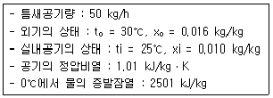
- 502.8 kJ/H
- 670.4 kJ/H
- 1002.8 kJ/H
- 1131.3 kJ/H
(정답률: 52%)
42. 다음 중 증기난방에 가장 많이 사용되는 배관재료는?
- 동관
- 염화비닐관
- 스테인리스관
- 아연도금을 하지 않은 흑관
(정답률: 65%)
43. 밸브를 완전히 열면 배관경과 밸브의 구경이 동일하므로 유체의 저항이 적지만 부분개폐 상태에서는 밸브판이 침식되어 완전히 닫아도 누설될 우려가 있는 밸브는?
- 체크 밸브
- 앵글 밸브
- 게이트 밸브
- 글로브 밸브
(정답률: 60%)
44. 다음 중 공조시스템에서 덕트 내에 변풍량(VAV) 유니트를 채용하는 가장 주된 이유는?
- 소음제거
- 냉온풍의 혼합
- 취출공기의 온도제어
- 부하변동에 대한 대응
(정답률: 62%)
45. 온수난방 배관에서 리버스 리턴(Reverse return)방식을 사용하는 이유는?
- 배관의 신축을 흡수하기 위하여
- 배관의 길이를 짧게 하기 위하여
- 온수의 유량분배를 균일하게 하기 위하여
- 배관내의 공기배출을 용이하게 하기 위하여
(정답률: 64%)
46. 정확한 환기량과 급기량 변화에 의해 실내압을 정압(+)또는 부압(-)으로 유지할 수 있는 환기방식은?
- 급기팬과 배기팬의 조합
- 급기팬과 자연배기의 조합
- 자연급기와 배기팬의 조합
- 자연급기와 자연배기의 조합
(정답률: 58%)
47. 어느 사무실이 다음과 같은 조건에 있을 때, 이 사무실에 요구되는 환기량은?
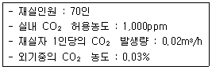
- 500 m3/h
- 1000 m3/h
- 1500 m3/h
- 2000 m3/h
(정답률: 42%)
48. 공기조화방식 중 팬코일 유닛방식에 대한 설명으로 옳지 않은 것은?
- 각 유닛의 수동제어가 불가능하다.
- 덕트 ㅅ방식에 비해 유닛의 위치 변경이 쉽다.
- 각 실에 수배관으로 인한 누수의 우려가 있다.
- 유닛을 창문 밑에 설치하면 콜드 드래프트를 줄일 수 있ㄷ.
(정답률: 55%)
49. 건구온도 30℃, 수증기 분압 1.69 kPa인 습공기의 상대 습도는? (단, 30℃ 포화공기의 수증기 분압은 4.23 kPa이다.)
- 20%
- 30%
- 40%
- 50%
(정답률: 48%)
50. 압축식 냉동기의 구성요소 중 고압부와 저압부의 경계 선상에서 작동하는 장치는?
- 증발기와 응축기
- 팽창밸브와 압축기
- 증발기와 압축기
- 팽창밸브와 증발기
(정답률: 32%)
51. 습공기에 관한 설명 중 옳지 않은 것은?
- 건구온도가 일정할 경우 상대습도가 높을수록 노점온도는 높아진다.
- 절대습도가 일정할 경우 건구온도가 높을수록 비체적은 커진다.
- 건구온도가 일정할 경우 상대습도가 높을수록 절대습도는 낮아진다.
- 절대습도가 일정할 경우 건구온도가 높을수록 엔탈피는 커진다.
(정답률: 58%)
52. 공기 2,000kg/h를 증기코일로 가열하는 경우, 코일을 통과하는 공기의 온도차가 25.5℃, 증기 온도에서 물의 증발잠열이 2229.52 kJ/kg일 때 가열에 필요한 증기량은? (단, 공기의 정압비열은 1.0 kJ/kgㆍK이다.)
- 18.2 kg/h
- 23.1 kg/h
- 40.2 kg/h
- 50.2 kg/h
(정답률: 55%)
53. 냉방시 실내온도가 26℃로 유지되고 있고, 아래층이 비공조실일 때 바닥을 통해 취득되는 관류열량은? (단, 외기온도는 34℃, 바닥의 열관류율은 0.58 W/m2ㆍK, 바닥면적은 50m2이다.)
- 58 W
- 116 W
- 232 W
- 464 W
(정답률: 8%)
54. 건구온도 26℃인 습공기 1,000m3/h를 14℃로 냉각시키는데 필요한 열량은? (단, 현열만에 의한 냉각이며, 공기의 정압비열은 1.0kJ/kgㆍK, 공기의 밀도는 1.2kg/m3이다.)
- 8642 kJ/h
- 12510 kJ/h
- 14544 kJ/h
- 18862 kJ/h
(정답률: 62%)
55. 다음과 같은 특징을 갖는 천장취출구는?
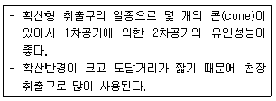
- 노즐형
- 아네모스탯형
- 팬형
- 펑커형
(정답률: 62%)
56. 고속덕트에 관한 설명 중 옳지 않은 것은?
- 소음이 크므로 취출구에 소음상자를 설치한다.
- 관마찰저항을 줄이기 위하여 일반적으로 단면을 원형으로 한다.
- 공장이나 창고 등과 같이 소음이 별로 문제가 되지 않는 곳에 사용된다.
- 설치 스페이스를 많이 차지하므로 고층빌딩 등과 같이 설치 스페이스를 크게 취할 수 없는 곳에서는 사용할 수 없다.
(정답률: 77%)
57. 다음 중 에어와셔에 엘리미네이터(eliminator)를 설치하는 이유로 가장 알맞은 것은?
- 기내의 기류분포를 고르게 하기 위해
- 공기의 갑습이 효과적으로 되게 하기 위해
- 분무된 물방울이 밖으로 못나가게 하기 위해
- 섬유 등의 먼지를 효율적으로 제거하기 위해
(정답률: 64%)
58. 다음의 송풍기 풍량제어법에 대한 설명 중 ()안에 알맞은 내용은?
- ① 회전수 제어, ② 토출댐퍼제어
- ① 토출댐퍼제어, ② 회전수 제어
- ① 흡입댐퍼제어, ② 토출댐퍼제어
- ① 토출댐퍼제어, ② 흡입댐퍼제어
(정답률: 79%)
59. 공기여과장치에서 입구 측의 오염도가 0.5mg/m3, 출구측의 오염도가 0.14 mg/m3일 때, 이 공기여과장치의 여과효율은?
- 67%
- 72%
- 77%
- 82%
(정답률: 68%)
60. 열에 의하여 쾌적감이나 불쾌감을 느끼는 요소를 물리적 온열 4요소라고 하는데, 다음 중 이에 속하지 않는 것은?
- 습도
- 기류
- 강수량
- 복사열
(정답률: 66%)
4과목: 소방 및 전기설비
61. 논리식 Aㆍ(A+B)를 간단히 하면 무엇인가?
- A+B
- AㆍB
- B
- A
(정답률: 48%)
62. 전지의 자기 방전을 보충함과 동시에 상용 부하에 대한 전력 공급은 충전기가 부담하도록 하되 충전기가 부담하기 어려운 일시적인 대전류 부하는 축전지로 하여금 부담케 하는 충전 방식은?
- 급속 충전
- 균등 충전
- 부동 충전
- 보통 충전
(정답률: 57%)
63. 다음 중 형광등 기구에 취부하는 안정기의 사용목적으로 가장 알맞은 것은?
- 광속의 증가
- 잡음의 방지
- 역률의 개선
- 방전의 안정
(정답률: 48%)
64. 자동화재탐지설비의 감지기 설치에 관한 설명 중 옳지 않은 것은?
- 천장 또는 반자의 옥내에 면하는 부분에 설치한다.
- 정온식 및 보상식 감지기는 실내로의 공기유입구로부터 0.5m 이상 떨어진 위치에 설치한다.
- 보상식 스포트형 감지기는 정온점이 감지기 주위의 평상시 최고온보다 20℃ 이상 높은 것으로 설치 한다.
- 정온식 감지기는 주방ㆍ보일러실 등으로서 다량의 화기를 취급하는 장소에 설치하되, 공칭작동온도가 최고 주위온도보다 20℃ 이상 높은 것으로 설치한다.
(정답률: 39%)
65. 도체의 한 단면에서 25초 동안에 100[C]의 전하가 통과했다면 전류의 크기는?
- 0.25[A]
- 0.4[A]
- 2.5[A]
- 4[A]
(정답률: 57%)
66. 3상 Y결선에서 선간전압이 200[V]인 3살 교류의 상접압 [V]은?
- 115
- 346
- 453
- 600
(정답률: 50%)
67. 다음의 자동제어 방식 중 각종 연산제어 및 에너지 절약 제어가 가능하며 정밀도 및 신뢰도가 가장 높은 것은?
- DDC 방식
- 전기식
- 전자식
- 공기식
(정답률: 76%)
68. 다음 중 전하간의 정전유도현상을 이용한 기기는?
- 전자석
- 발전기
- 전기집진기
- 솔레노이드 밸브
(정답률: 47%)
69. 다음 설명에 알맞은 피드백 제어계의 구성 요소는?
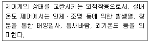
- 외란
- 제어대상
- 제어편차
- 주 피드백 신호
(정답률: 70%)
70. 다음 직ㆍ병령회로에서 전압은 110[V]이며 R1=12[Ω], R2=15[Ω], R3=30[Ω], R4=22[Ω]이다. 전체합성저항 R은?
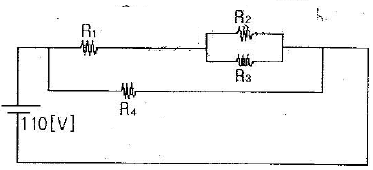
- 10[Ω]
- 22[Ω]
- 34[Ω]
- 11[Ω]
(정답률: 31%)
71. 저항을 측정하는 경우에 사용되는 계측기는?
- 변류기
- 분류기
- 다이오드
- 멀티미터(테스터)
(정답률: 63%)
72. 고압차단기 중 진공차단기에 대한 설명으로 옳지 않은 것은?
- 차단시간이 짧다.
- 개폐 수명이 길다.
- 압축공기 등의 부대설비가 필요하다.
- 차단 성능이 우수하며 소형ㆍ경량이다.
(정답률: 50%)
73. 조명설비에서 광속(Luminous flux)의 단위는?
- 루멘[lm]
- 칸델라[cd]
- 럭스[lx)]
- 헤르쯔[Hz]
(정답률: 75%)
74. 유효전력과 무효전력의 단위와 구분하기 위하여 사용되는 피상전력의 단위는?
- [W]
- [VAR]
- [Ah]
- [VA]
(정답률: 65%)
75. 실효값이 220[V]인 교류전압의 최대값은 얼마인가?
- 245[V]
- 275[V]
- 311[V]
- 325[V]
(정답률: 50%)
76. 미리 정해진 순서에 따라 제어의 각 단계를 순차적으로 행하는 자동 제어는?
- 피드백 제어
- 폐회로 제어
- 공정 제어
- 시퀀스 제어
(정답률: 69%)
77. 다음 설명에 알맞은 배선 공사는?
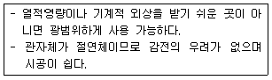
- 금속관 공사
- 버스턱트 공사
- 플로어덕트 공사
- 합성수지관 공사(CD관 제외)
(정답률: 74%)
78. 변압기실의 건축설계시 고려사항으로 옳지 않은 것은?
- 벽, 출입문 등은 방음구조로 한다.
- 하론 설비 등 소화장치를 고려한다.
- 기기반입구, 배열 등에 충분한 넓이와 높이를 취한다.
- 자냉식 변압기에 대해서는 배기공을 설치하지 않는다.
(정답률: 59%)
79. 다음 중 키르히호프의 법칙에 대한 설명으로 옳지 않은 것은?
- 복잡한 회로의 전압과 전류를 계산할 때 사용된다.
- 회로내의 임의의 한 점에 들어오고 나가는 전류의 합은 같다.
- 임의의 폐회로내에서의 기전력과 전압강하의 대수의 합은 같다.
- 회로 내에 2개 이상의 전원이 있을 때 임의의 한 점에서의 전류는 각 전원이 단독으로 있을 때의 전류의 합과 같다.
(정답률: 38%)
80. 전압의 구분에서 저압의 범위로 옳은 것은?
- 교류 750[V] 이하, 직류 600[V] 이하
- 교류 650[V] 이하, 직류 600[V] 이하
- 교류 650[V] 이하, 직류 750[V] 이하
- 교류 600[V] 이하, 직류 750[V] 이하
(정답률: 37%)
5과목: 건축설비관계법규
81. 각층의 거실 면적이 1000m2인 10층 종합병원에 설치하여야 하는 승용승강기의 최소 대수는? (단, 8인승 승용승강기인 경우)
- 2대
- 3대
- 4대
- 5대
(정답률: 33%)
82. 개인하수처리시설 설치 대상 건축물에서 개인하수처리 시설을 설치하려는 자는 그 설치공사가 완료한 때 누구의 준공검사를 받아야 하는가?
- 시장ㆍ군수ㆍ구청장
- 국토해양부장관
- 환경부장관
- 시ㆍ도지사
(정답률: 47%)
83. 다음 중 축냉식 전기냉방설비의 설계기준 내용으로 옳지 않은 것은?
- 열교환기는 시간당 평균냉방열량을 처리할 수 있는 용량 이상으로 설치하여야 한다.
- 축열조는 축냉 및 방냉운전을 반복적으로 수행하는데 적합한 재질의 축냉재를 사용하여야 한다.
- 자동제어설비는 필요할 경우 수동조작이 가능하도록 하여야 하며 감시기능 등을 갖추어야 한다.
- 부분축냉방식의 경우에는 냉동기가 축냉운전과 방냉운전 또는 냉동기와 축열조의 동시운전이 반복적으로 수행하는데 아무런 지장이 없어야 한다.
(정답률: 62%)
84. 다음의 건축물의 냉방설비와 관련된 기준 내용 중 ()안에 알맞은 것은?
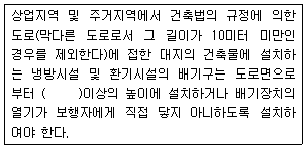
- 0.5미터
- 1미터
- 1.5미터
- 2미터
(정답률: 71%)
85. 에너지절약계획서 작성에 따른 에너지성능지표 검토서의 적합판정기준으로 맞는 것은?
- 평점합계 60점 이상
- 평점합계 65점 이상
- 평점합계 70점 이상
- 평점합계 80점 이상
(정답률: 28%)
86. 다음 중 건축법상 제1종 근린생활시설에 해당되지 않는 것은?
- 일반음식점
- 치과의원
- 마을회관
- 파출소
(정답률: 54%)
87. 초고층 건축물의 피난ㆍ안전을 위하여 지상층으로부터 최대 30개 층마다 설치하는 대피공간을 의미하는 것은?
- 무창층
- 개방공간
- 피난계단
- 피난안전구역
(정답률: 63%)
88. 환기ㆍ난방 또는 냉방시설의 풍도가 방화구획을 관통하는 경우, 그 관통부분 또는 이에 근접한 부분에 설치하는 댐퍼에 관한 기준 내용으로 옳은 것은?
- 철재로서 철판의 두께가 1.5mm 이상일 것
- 닫힌 경우에는 1.5mm 이상의 틈이 생기지 아니할 것
- 화재가 발생한 경우 온도의 상승에 의하여 자동적으로 열릴 것
- 화재가 발생한 경우 연기의 발생에 의하여 자동적으로 열릴 것
(정답률: 38%)
89. 다음은 건축법상 리모델링에 대비한 특례 등에 관한 기준 내용이다. 밑중 친 대통령령으로 정하는 구조에 해당되지 않는 것은?
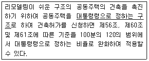
- 개별 세대 한에서 구획된 실의 개수를 변경할 수 있을 것
- 개별 세대 한에서 구획된 실의 크기를 변경할 수 있을 것
- 각 세대는 인접한 세대와 수직 방향으로 통합하거나 분리 할 수 없을 것
- 구조체에서 건축설비, 내부 마감재료 및 외부마감재료를 분리할 수 있을 것
(정답률: 54%)
90. 국토해양부령으로 정하는 기준에 따라 계단 및 복도를 설치하여야 하는 대상 건축물 기준은?
- 연면적 200m2를 초과하는 건축물
- 연면적 250m2를 초과하는 건축물
- 연면적 300m2를 초과하는 건축물
- 연면적 400m2를 초과하는 건축물
(정답률: 29%)
91. 지하층의 비상탈출구에 관한 기준 내용으로 옳지 않은 것은?
- 비상탈출구의 문은 피난방향으로 열리도록 할 것
- 비상탈출구는 출입구로부터 2m 이상 떨어진 곳에 설치할 것
- 비상탈출구의 문은 실내에서 항상 열 수 있는 구조로 할 것
- 비상탈출구의 유효너비는 0.75m 이상으로 하고, 유효높이는 1.5m 이상으로 할 것
(정답률: 43%)
92. 공동주택과 오피스텔의 난방설비를 개별난방방식으로 하는 경우에 대한 기준 내용으로 옳은 것은?
- 보일러실의 연도는 내화구조로서 공동연도로 설치할 것
- 보일러를 설치하는 곳과 거실사이의 경계벽은 방음구조의 벽으로 구획할 것
- 보일러실의 윗부분과 아랫부분에는 지름 5센티미터 이상의 공기흡입구 및 배기구를 설치할 것
- 전기보일러를 사용하는 경우, 보일러실의 윗부분에는 그 면적이 1제곱미터 이상인 환기창을 설치할 것
(정답률: 44%)
93. 비상조명등을 설치하여야 하는 특정소방대상물에 해당하는 것은? (단, 가스시설 또는 창고와 이와 비슷한 것은 제외한다.)
- 지하층을 포함하는 층수가 5층 이상인 건축물로서 연면적 3천제곱미터 이상인 것
- 지하층을 포함하는 층수가 5층 이상인 건축물로서 연면적 1천제곱미터 이상인 것
- 지하층을 포함하는 층수가 3층 이상인 건축물로서 연면적 3천제곱미터 이상인 것
- 지하층을 포함하는 층수가 3층 이상인 건축물로서 연면적 1천제곱미터 이상인 것
(정답률: 25%)
94. 다음의 소방시설 중 소화설비에 해당되는 것은?
- 연결송수관설비
- 옥내소화전설비
- 제연설비
- 연결살수설비
(정답률: 52%)
95. 건축허가등을 함에 있어서 미리 소방본부장 또는 소방서장의 동의를 받아야 하는 대상 건축물 등에 속하지 않는 것은?
- 항공기격납고
- 연면적이 400m2인 건축물
- 청소년시설 및 노유자 시설로서 연면적이 150m2인 건축물
- 지하층 또는 무창층이 있는 건축물로서 바닥면적이 150m2인 층이 있는 것
(정답률: 37%)
96. 건축물이 천재지변이나 그 밖의 재해로 멸실된 경우 그 대지에 종전과 같은 규모의 범위에서 다시 축조하는 것을 무엇이라 하는가?
- 신축
- 재축
- 개축
- 증축
(정답률: 69%)
97. 업무시설로서 당해 용도에 사용되는 바닥면적의 합계가 최소 얼마 이상인 경우, 건축허가 신청시 에너지절약계획서를 제출하여야 하는가?
- 1000m2
- 2000m2
- 3000m2
- 4000m2
(정답률: 43%)
98. 제연설비를 설치하여야 하는 특정소방대상물에 해당되지 않는 것은?
- 문화집회 및 운동시설로서 무대부의 바닥면적이 200m2 이상인 것
- 문화집회 및 운동시설 중 영화상영관으로서 수용인원 100인 이상인 것
- 갓복도아파트에 부설된 특별피난계단 또는 비상용승강기의 승강장
- 숙박시설로서 지하층 또는 무창층의 바닥면적이 1,000m2 이상인 것은 당해 용도로 사용되는 모든 층
(정답률: 34%)
99. 온수온돌의 설치 기준 내용으로 옳지 않은 것은? (단, 한국산업규격에 따른 조립식 온수온돌판을 사용하여 온수온돌을 시공하는 경우 제외)
- 바닥난방을 위한 열이 바탕층 아래 및 측벽으로 손실되는 것을 막을 수 있도록 단열재를 방열관과 바탕층 사이에 설치하는 것을 원칙으로 한다.
- 배관층과 바탕층 사이의 열저항은 층간 바닥인 경우에는 해당 바닥에 요구되는 열관류저항의 50% 이상이 되도록 하는 것을 원칙으로 한다.
- 바탕층이 지면에 접하는 경우에는 바탕층 아래와 주변 벽면에 높이 10센티미터 이상의 방수처리를 하며, 단열재의 윗부분에 방습처리를 하여야 한다.
- 배관층은 방열관에서 방출된 열이 마감층 부위로 최대한 균일하게 전달될 수 있는 높이와 구조를 갖추어야 한다.
(정답률: 29%)
100. 건축물의 에너지절약설계기준에서 다음과 같이 정의되는 용어는?
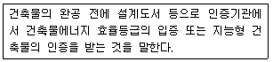
- 본인증
- 예비인증
- 사전인증
- 설계인증
(정답률: 35%)